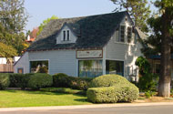
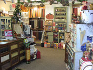
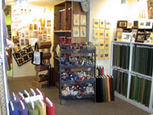
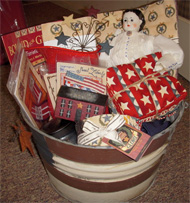

Address
Fat Quarters Quilt Shop728 Civic Center Dr.
(formerly Escondido Ave.)
Vista, CA
92084
Telephone
(760) 758-8308Hours
Mon - Sat: 10am -5:30pmClosed Sunday
Website
www.fatquartersquiltshop.com
Fat Quarters Quilt Shop
Fat Quarters resides in a quaint grey farmhouse in Vista, California about 45 minutes north of San Diego. The shop specializes in reproduction and primitive prints and plaids and houses approximately 4000 bolts of 100% cotton fabric. There are also a wide variety of hand dyed wools, minkee fabrics, and many patterns to choose from. The staff is warm and welcoming and very happy to help with all of your quilting questions. Fat Quarters also has a long list of classes available to learn new techniques or just to visit with other quilters.
Map & Directions
Driving Directions: From I-15 take 78W - From I-5 take 78E. Take the Civic Center Exit. Turn north onto Civic Center Drive (formerly Escondido Ave.). Go down the hill thru several stop lights. We are one block after South Sante Fe, just past the shopping center, on the right in a cute gray farmhouse.
View Larger Map
- Home
- Prize Winners
- Webmaster
- © Southern California Quilters Run 2016-17